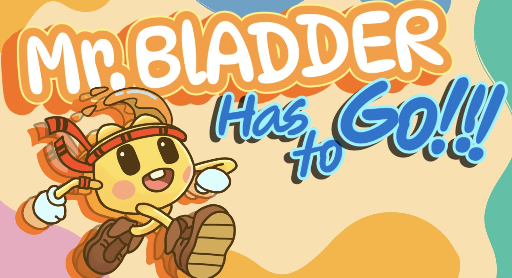
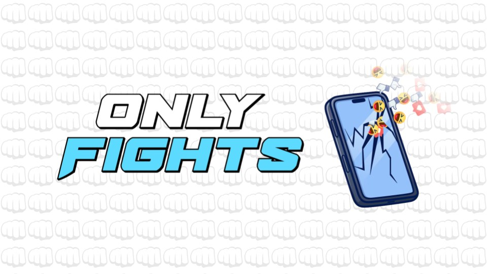

Judy Alqabbani
Gameplay Engineer
I build the systems players feel directly, like cameras, controls, and progression. I’m an MS Computer Science (Game Development) student at USC, working in Unreal Engine and Unity on two USC team games and my own narrative project.
Games
Two USC team games I’m engineering on now, plus projects I’ve built on my own.

Mr. Bladder Has to Go
In developmentA whimsical 3D balancing game. I’m building the camera and controller systems that make movement feel right.
View project →
Only Fights
In developmentA comedic 2D co-op beat ’em up about influencers who fight for followers. I’m building the livestream chat features.
View project → ▶ Gameplay
▶ Gameplay
Shadow of the Past
Personal projectA third-person narrative game I designed and programmed solo: player controller, orbit camera, progression, cutscenes, UI and audio.
View project → ▶ Gameplay
▶ Gameplay
Quarto
2020The Quarto board game in Java: drag-and-drop pieces, board state tracking, and win and draw detection across all 10 lines. I wrote all the code.
View project →CAMA
A voice medical assistant running on a Raspberry Pi. It turns speech into text, uses a neural network I trained in Keras to recognize 31 intents (including 20 medical conditions), and speaks its answer back. Undergraduate capstone: I did all the development and deployment.
COVID-19 Awareness Website
A website with verified health information and lockdown activities, built in HTML, CSS and JavaScript. Won 2nd place in the Boeing Engineering Competition.
Visit ↗About
I’m a gameplay engineer at USC, where I’m doing my master’s in Computer Science with a focus on game development.
I started out in software engineering, building websites, automation tools, and spending a year at IBM. It was good experience, but I always knew I wanted to make games, so I went for it.
Now I spend my time writing gameplay code for two USC team games and building my own game, Shadow of the Past, where I designed and programmed the whole first level by myself, about 1,800 lines of C#. The parts I love most are the ones players feel right away: how the character moves, how the camera follows, and how the game reacts to what you do.
- Studying
- MS Computer Science (Game Development)University of Southern California · Expected May 2028
- Coursework
- CSCI 580: 3D Graphics & Rendering
CTIN 541: Design for Interactive Media - Degree
- B.Eng. Software EngineeringAlfaisal University · Second Honors
- Before USC
- IBM · RPA Developer · Web Developer2021 – 2024, Riyadh
- Based in
- Los Angeles, CA
Toolkit
Gameplay Programming
- Physics-based character controllers
- Camera-relative movement
- Double jump, coyote time & ground detection
- Third-person orbit cameras with collision
- Controller & input handling
- Pickups, triggers & interactables
- Progression, gates & unlock systems
- Game state & scene transitions
- Cutscenes, HUD & player feedback
- Gameplay audio (SFX, footsteps, music)
- Turn-based logic & rules systems
- Animation state driving
Engines & Tools
- Unity
- Unreal Engine
- Blueprints
- Git & Perforce
- Wwise
- JavaFX
- Keras / TensorFlow
Languages
- C#
- C++
- C
- Java
- Python
- JavaScript, HTML & CSS
How I Build
- Modular, component-based systems
- Event-driven architecture
- Object-oriented design
- Debugging & optimization
- Rapid prototyping
- Working in large team codebases
Let’s build something fun.
I’m looking for a Summer 2027 gameplay engineering internship. The best way to reach me is by email.